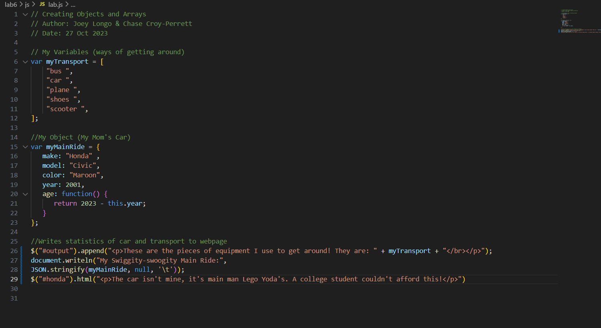
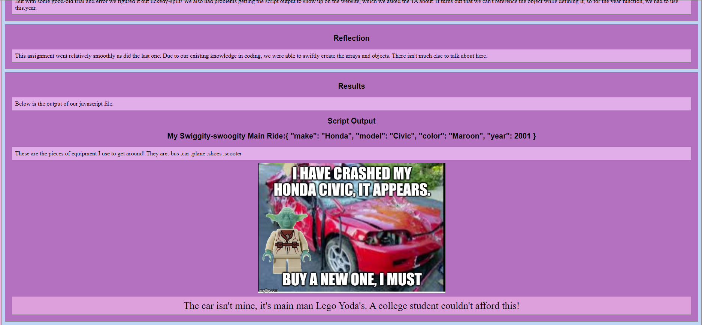
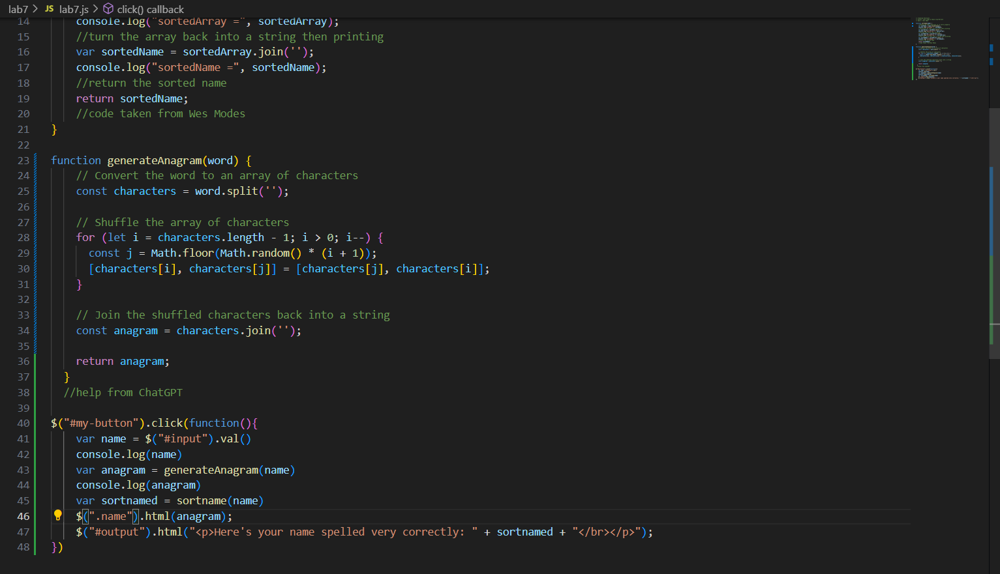
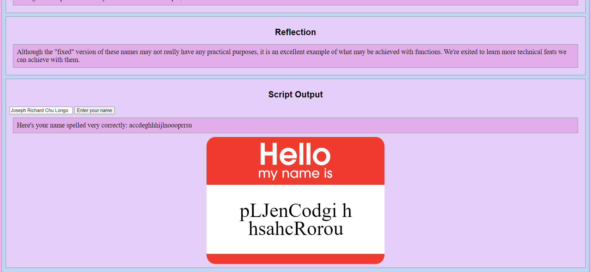

Lab 14 - Debugging Tools & Strategies
Challenge
Using Debugging strategies, go back to previous labs that may have not worked as intended and fix them.
Problems
Throughout each lab we edited, we ran into several issues that were related to each lab. It took a while to remember how we did each lab and how to change it based on the new requirements. Some more specific examples include: adding the defer statements and links to jquery as well as changing function and variable names.
Reflection
We never really had a lab that didn't really work so we just tried to improve upon previous labs. After learning jQuery, there's a lot of potential for changes to make. It's a nice opportunity to touch up on these labs given how much we have learned over the course of the class.
Debugging
Lab 6
There was nothing particularly wrong with this lab, but knowing now how to manipulate DOMs, we wanted to retry it using jQuery. Another reason we chose this one was because the script output had a 0 in it that really should not have been there. Now the text in the script output is affected by CSS
 Lab 7
This lab was also fine as it was, but there was a couple things that we wanted to add to this one. Now that we knew how to use the input box, we used that instead of using the prompt command. Along with that, we added a button, but that main addition was the anagram function with the name tag. Similar to the example showed in class, we took an anagram function and used jQueries .html() to add it to the name tag.
 